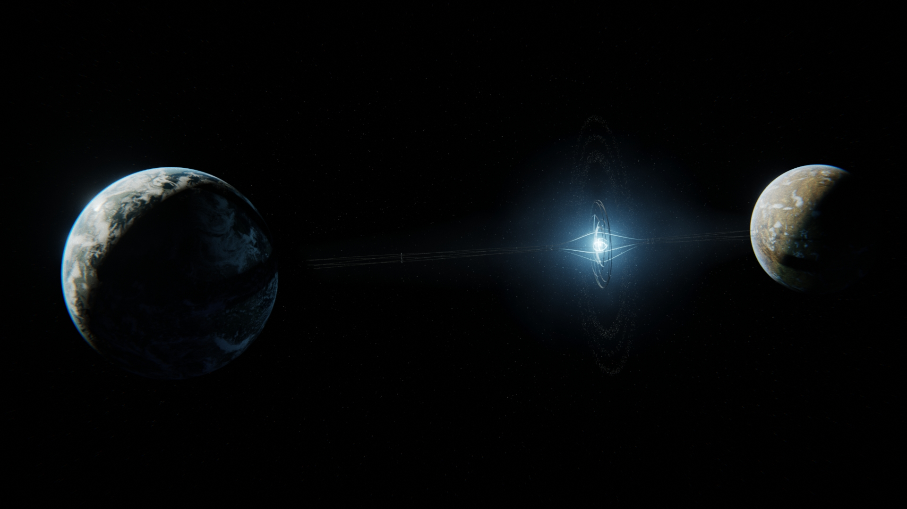

GATEWAY STATION
 Gateway Station is one of the most extraordinary feats of engineering and diplomacy in the Halcyon universe. Positioned precisely at the L1 Lagrange point between the twin planets Aurelia and Pyraxa, it serves as one of the primary conduits through which the Intergalactic Union maintains instantaneous transit across the cosmic web. The station’s defining feature is its immense portal generator, among the most powerful ever constructed, capable of opening stable gateways to galaxies far beyond the standard operational range. This core function positions Gateway Station as a critical node within the Intergalactic Portal Network, making it an essential anchor point for trade, exploration, and the dissemination of knowledge between far-flung civilizations.
{kind=link}
Suspended between two worlds, Gateway Station is physically tethered by twin space elevators to Aurelia and Pyraxa below. These planets, orbiting a shared barycenter in a rare doublet system, are synchronized in a tidally locked dance that provides gravitational stability ideal for such a megastructure. Aurelia, the larger of the pair, is an oceanic world rich with forests, while Pyraxa, its arid sibling, is defined by high deserts and crystalline canyons. Both are preserved as pristine nature sanctuaries, off-limits to settlement by longstanding intergalactic custom. This reverence for planetary ecosystems reinforces the Union’s guiding principle: that intelligent life should tread lightly upon the worlds it explores.
Gateway Station itself is a vast, self-sustaining city among the stars. It accommodates billions of residents, visitors, and crew within a network of artificial environments—from serene bioparks and conservation domes to gleaming research towers and deep-space observatories. Starship construction docks hum with activity, and vast commercial concourses bustle with trade. The station's infrastructure is underpinned by powerful artificial gravity systems, robust life support, and fully renewable energy drawn from orbital solar arrays and quantum core regulators. Every function is coordinated by embedded synthetic minds that ensure seamless operation and protection of its inhabitants.
The station’s orbit is never still. Encircling it are rings of starships, platforms, and docking arrays—an ever-shifting panorama of movement and light. Vessels from across the Union arrive and depart in continuous waves, their warp trails creating luminous arcs that sweep across the darkness. At any given moment, hundreds of ships are in motion, traversing through portals or aligning for departure. It is a sight of ceaseless activity and ordered chaos, a visual testament to the thriving pulse of intergalactic civilization.
Gateway Station also serves a vital ecological function. Within its interior are vast biodiversity sanctuaries preserving flora and fauna from worlds across the known universe. These controlled habitats are not just repositories of life but also centers for interspecies research and environmental diplomacy. Scientists, conservationists, and visitors alike find inspiration in these living archives, which underscore the station’s dual role as protector and pioneer.
In a society that shuns planetary colonization in favor of orbital living, Gateway Station stands as a model for ethical advancement—where technological progress walks hand in hand with respect for the natural world. It is more than a travel hub or scientific platform; it is a cultural emblem of what the Intergalactic Union aspires to be: connected, conscientious, and continually reaching outward into the great unknown.